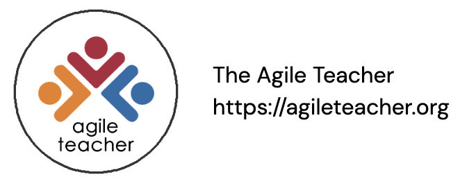

To Whom it May Concern:
This letter acknowledges $name has completed a $time minute professional learning experience offered through Agility [0], a collaborative game that builds the decision-making skills needed to effectively adjust teaching in response to student learning.
Through Agility, teacher teams are given a realistic classroom challenge. Teachers analyze the dilemma and then use evidence-based learning routines to advance the learning of all students. The learning routines are rooted in self-regulated learning and motivational sciences. This unique certificate verifies participation and lists the routines used in the games played.
Using the Danielson Rubric, Agility aligns to standard 3c: Engaging Students in Learning [1] and standard 4e: Growing and Developing Professionally [2]. Agility can be aligned to other state and local standards.
$name demonstrated use of the following teaching routines:
$cardsMore information about all of Agility's learning routines can be found at the Agility Routines [3] website. For additional information about standards alignment and learning activities, visit www.agileteacher.org. Please contact the professional learning team at rb4016@hunter.cuny.edu with any questions or if you require further information.
|
Sincerely, |
Certificate ID $hash
[0]: https://agileteacher.org/agility-game
[1]: https://www.nysed.gov/sites/default/files/danielson-teacher-rubric.pdf#page=75
[2]: https://www.nysed.gov/sites/default/files/danielson-teacher-rubric.pdf#page=109
[3]: https://agileteacher.org/routines/